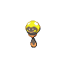

📖 英語版の図鑑説明
Tadbulb shakes its tail to generate electricity. If it senses danger, it will make its head blink on and off to alert its allies.
日本語訳
尻尾を振って電気を生み出す。危険を察知すると、仲間に知らせるため頭を点滅させる。
💡 英語名「Tadbulb」の由来
英語名「Tadbulb」は、tadpole（オタマジャクシ）とlight bulb（電球）を組み合わせた名前と考えられている。ドイツ語の名前は「Blipp」で、blip（ピッ）、Blitz（稲妻）、Kaulquappe（オタマジャクシ）から作られている。
出典 Bulbapedia
📊 ズピカの種族値
HP61
こうげき31
ぼうぎょ41
とくこう59
とくぼう35
すばやさ45
合計 272
❓ よくある質問
- ズピカの英語名は？
- ズピカの英語名は「Tadbulb」です。
- ズピカの英語名「Tadbulb」の由来は？
- 英語名「Tadbulb」は、tadpole（オタマジャクシ）とlight bulb（電球）を組み合わせた名前と考えられている。ドイツ語の名前は「Blipp」で、blip（ピッ）、Blitz（稲妻）、Kaulquappe（オタマジャクシ）から作られている。
- ズピカは英語版の図鑑でどう説明されている？
- 「Tadbulb shakes its tail to generate electricity. If it senses danger, it will make its head blink on and off to alert its allies.」と書かれています。日本語にすると「尻尾を振って電気を生み出す。危険を察知すると、仲間に知らせるため頭を点滅させる。」という意味です。
ズピカは第9世代（パルデア地方）のポケモンです。第9世代（パルデア地方）の英語名一覧 →